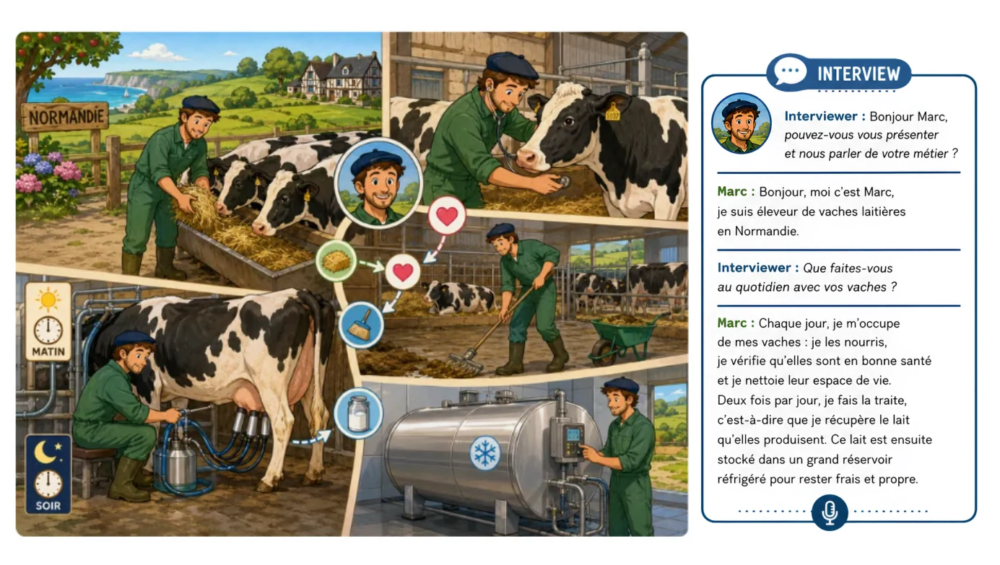

Marc — éleveur de vaches laitières
Intervieweur : Bonjour Marc, pouvez-vous vous présenter et nous parler de votre métier ?
Marc : Bonjour, moi c’est Marc, je suis éleveur de vaches laitières en Normandie.
Intervieweur : Que faites-vous au quotidien avec vos vaches ?
Marc : Chaque jour, je m’occupe de mes vaches : je les nourris, je vérifie qu’elles sont en bonne santé et je nettoie leur espace de vie. Deux fois par jour, je fais la traite, c’est-à-dire que je récupère le lait qu’elles produisent. Ce lait est ensuite stocké dans un grand réservoir réfrigéré pour rester frais et propre.